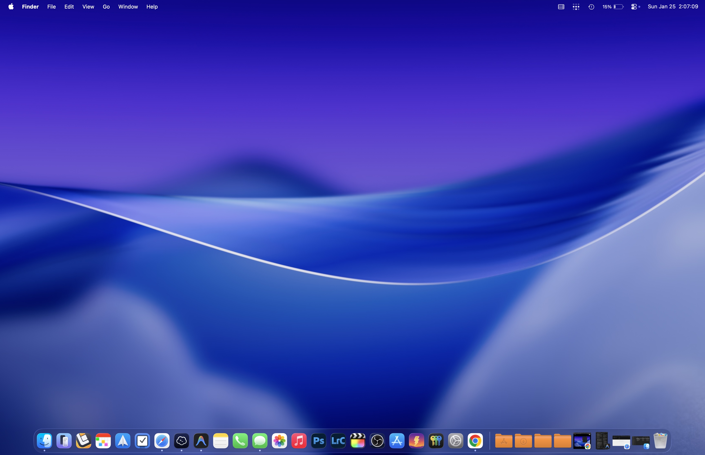
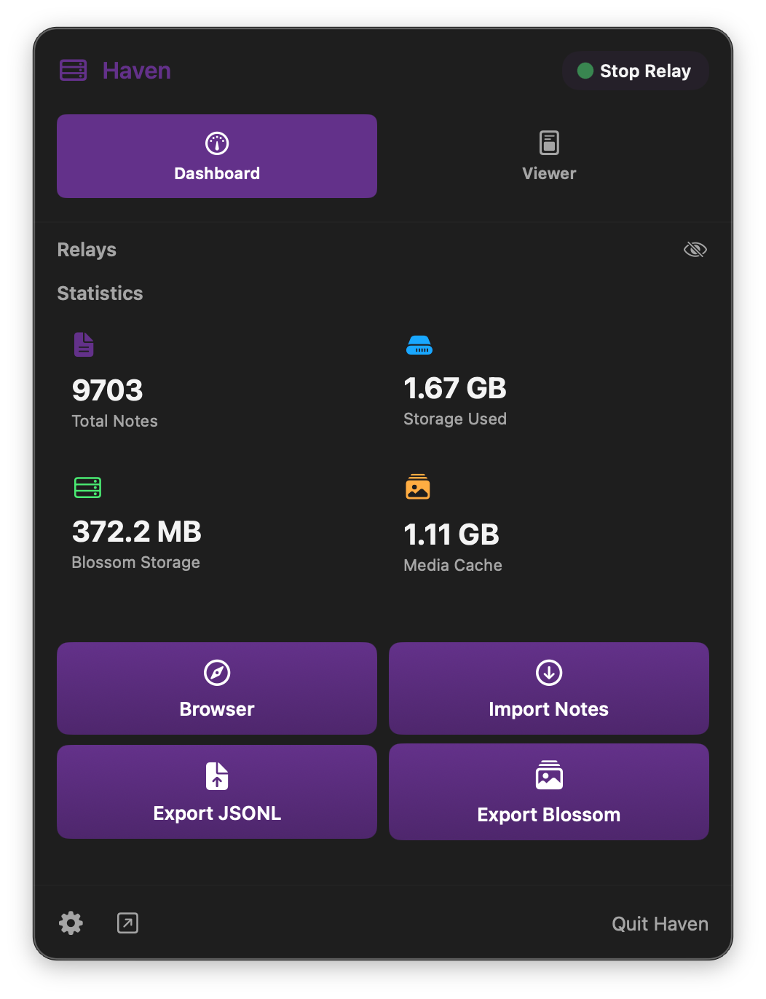
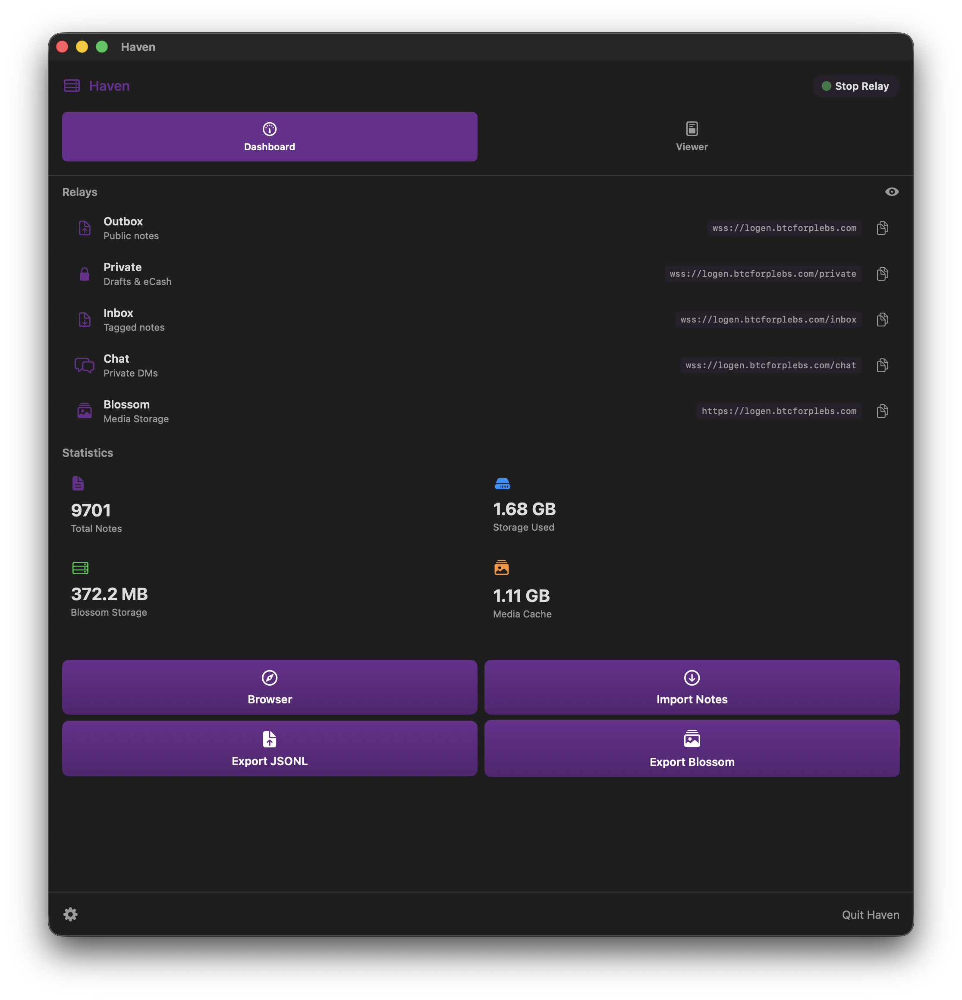
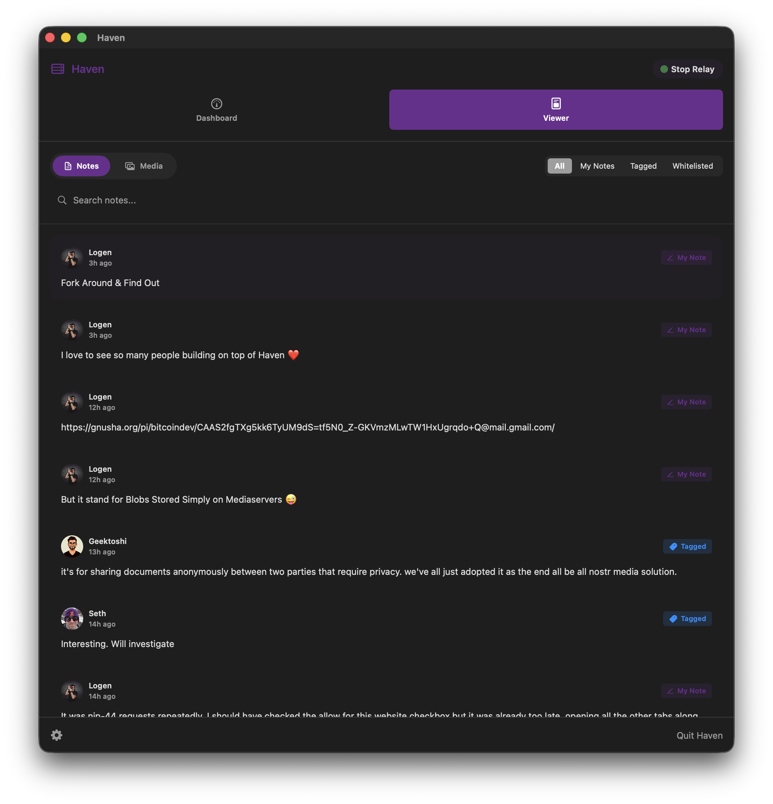
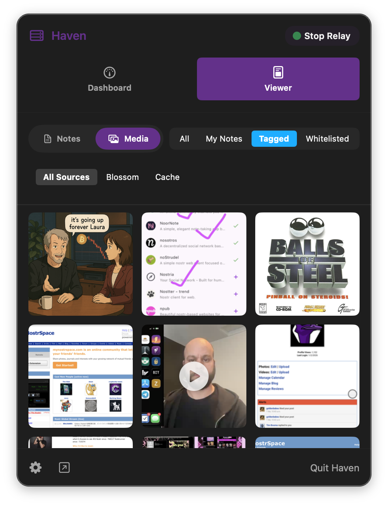
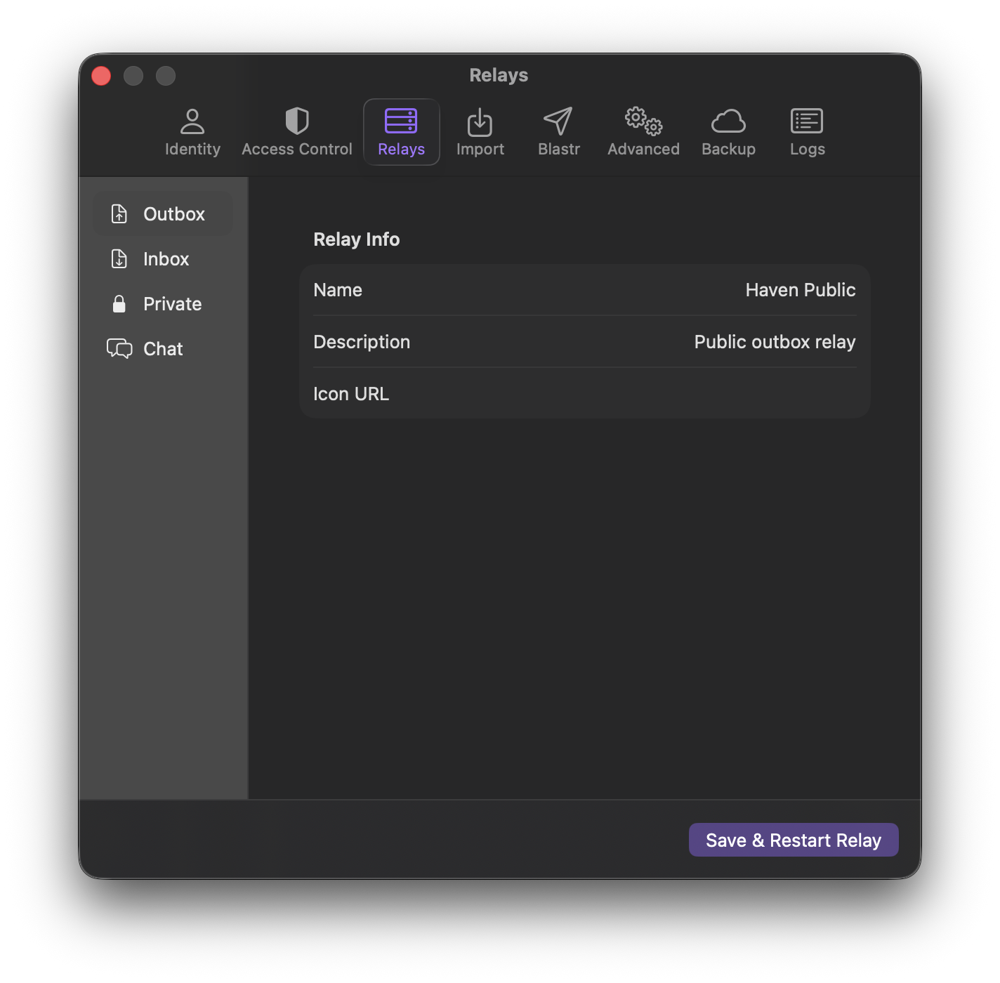
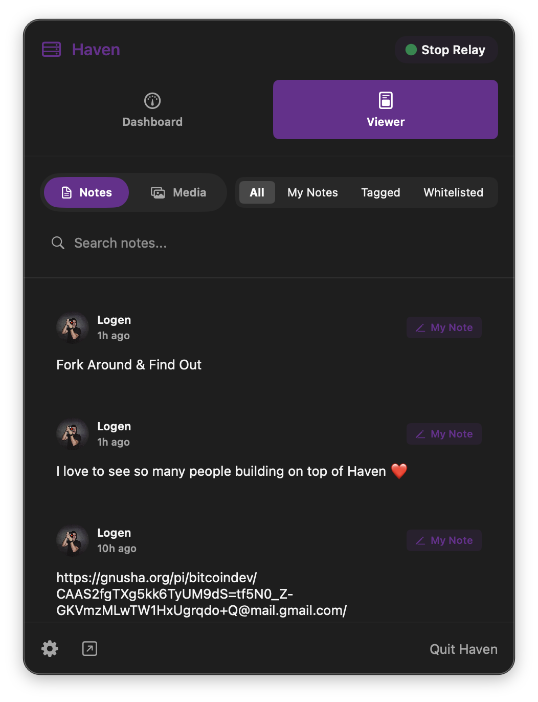

Powered by the original Go codebase. Fast, secure, and beautiful across all your devices.


Built from the ground up for macOS and iOS using Swift, delivering a seamless and responsive experience that feels right at home on every device.
Runs the exact same battle-tested Go code as the CLI relay. 100% open source with a completely verifiable architecture.
Integrated Lightning wallet support via Nostr Wallet Connect (NWC). Send and receive zaps instantly with real-time balance tracking.
Intelligence built into every post. Haven discovers your recipient's preferred relays and broadcasts directly to their inbox.
Use your Mac as your always-on home base. Haven for iOS securely syncs missed notes directly from your Mac relay.
Secured by system-level Keychain. Encrypt your private key with NIP-49 and stay in control of your identity across Haven.




